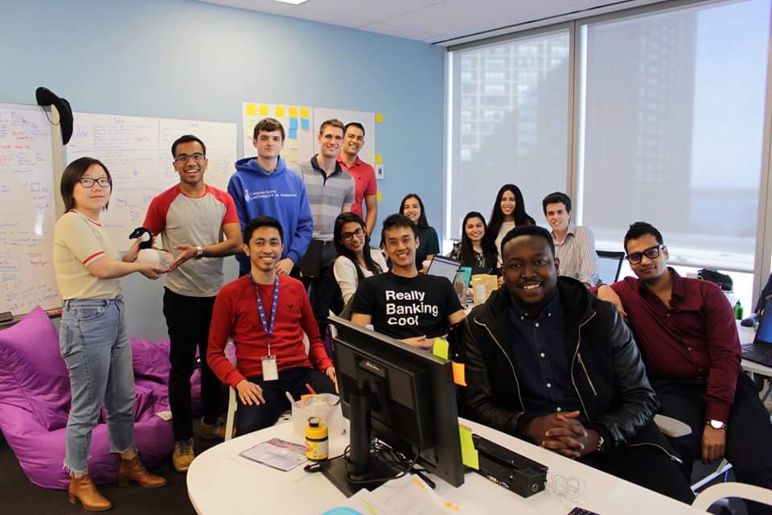

Co-op Term #1
Saturday May 20, 2017
First co-op term down, 5 more to go! Based on how this one went, I couldn’t be more excited. If the rest of my work placements are half as great, I think I will have had a successful co-op experience.
Why was it so good? I learned a lot and made new connections. I worked with talented and motivated people. I stepped outside of my comfort zone and took on challenges that I didn’t expect to. Most importantly, I looked forward to going to work and had fun while I was there.

-Aysha Cotterill